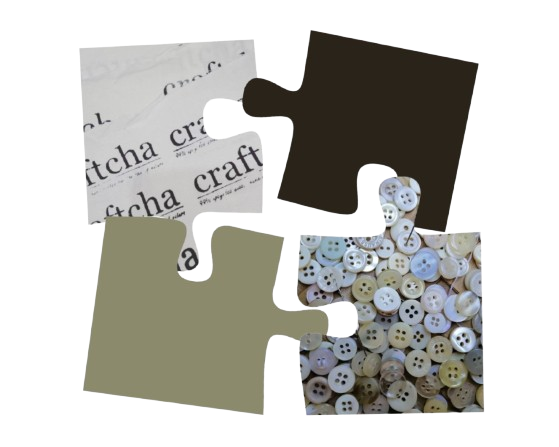
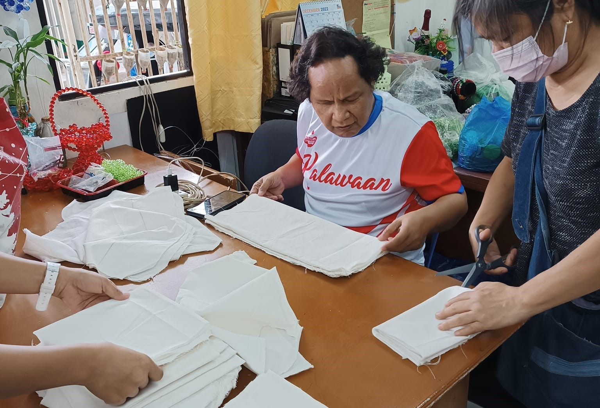
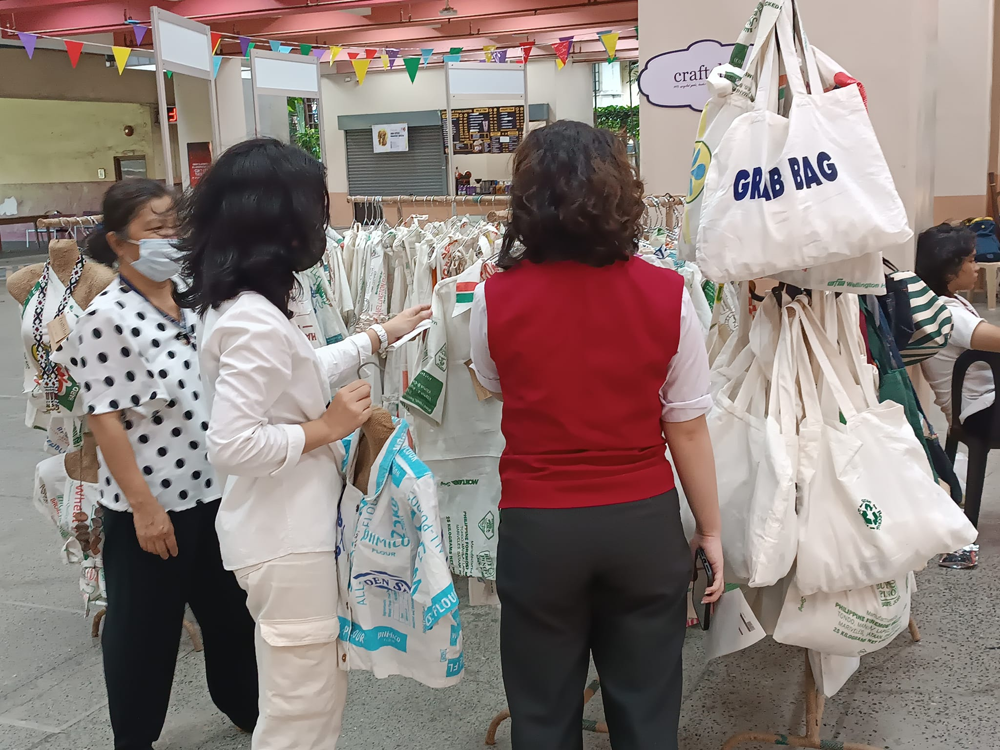
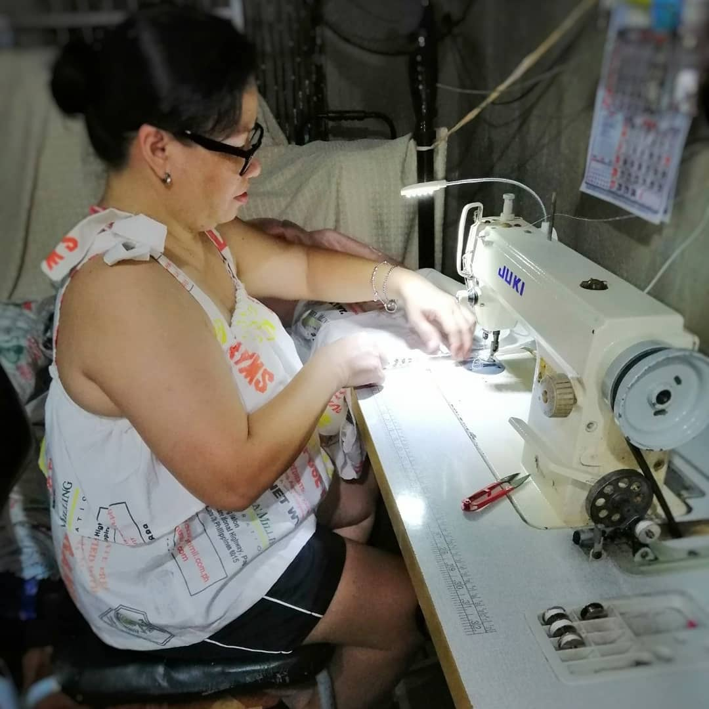
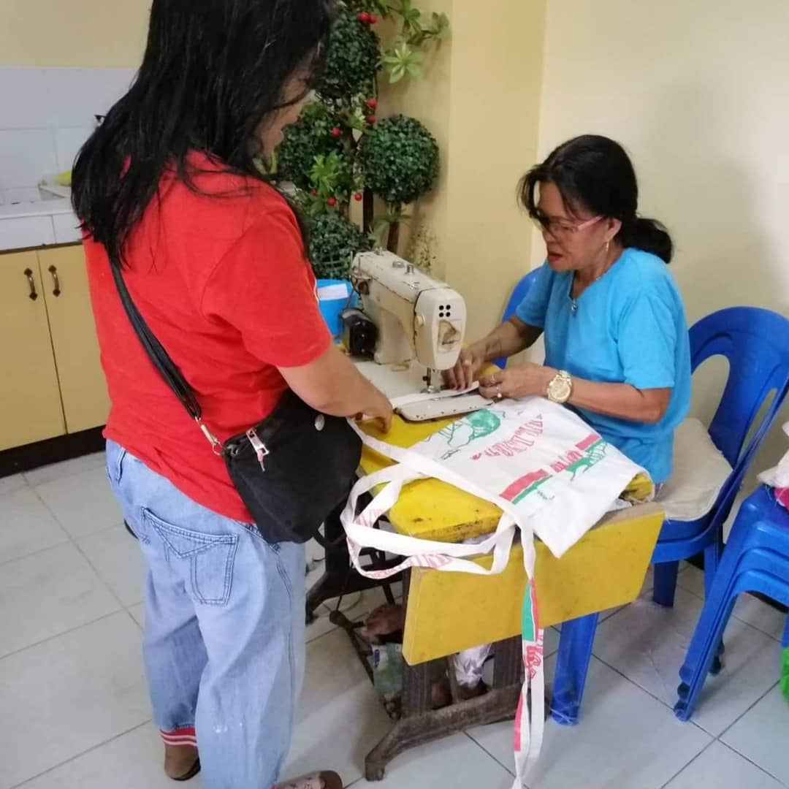
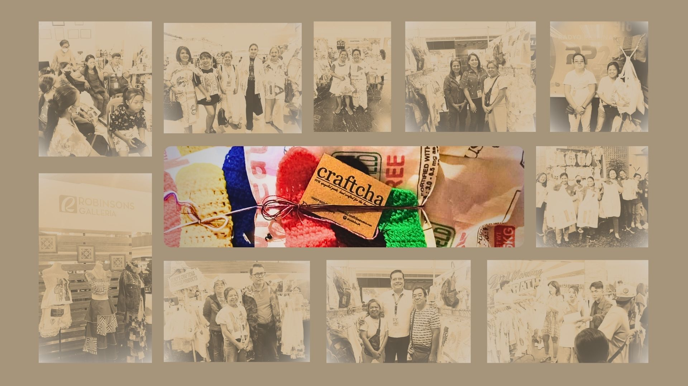

HISTORY
As a Typhoon Ondoy survivor, our experience kindled us to put up a business that advocates cloth waste management and minimizes plastic bag use. For almost a decade now and still running, our client's continuous support and interest in our goods have translated to us crafting different products out of various cloth waste materials and expanding our product line.

MISSION
To create high-quality, cost-effective products from recycled materials such as katsa (flour sacks), old jeans, and waste fabrics. By offering a range of handmade items reduces textile waste, support eco-friendly practices, and encourage mindful consumption.


VISION
To inspire a zero-waste lifestyle by transforming repurposed materials into sustainable, functional, and beautiful household products that promote environmental consciousness in everyday living.
ATE MERLIE & KUYA TOTO
“The founder of craftcha”
The visionary behind Craftcha! Together, they transform repurposed materials into beautiful and functional household items.

EMPLOYEE / WORKERS
Every person behind the creation of Craftcha gives color to the life of repurposed materials, with new purpose and meaning in people's daily lives.


All official members of Craftcha are not limited by any kind of status in life or in any state of living. Giving life back to found objects is an acceptance of the opportunity to showcase the hidden creativity they hold!

For almost 15 decades, Craftcha has continued to give service, fueled by the heart-whelming support and interest of our clients in our products. This inspires and empowers us to create consistent and improved products from various disregarded fabric materials, expanding our vision to see not just profit but using our platform as a privilege to influence discipline in our community. Let us come together and embrace a safer future, a future where waste is no longer a problem, but an opportunity.
What social media platform should we contact?
We're on Facebook, Instagram, TikTok, and email for Craftcha. We usually check Instagram and Facebook first, so feel free to reach out there!
What if I order the wrong size? Can I return it?
While we're happy to help, Craftcha returns are only accepted if the reason for the return is valid. We do this to maintain the safety and hygiene of our products for all our customers. Please contact us if you have any questions about our return policy.
Can I buy and have it delivered using the online service?
Yes, you can buy and have your Craftcha items delivered online! Just contact us for more details about our online ordering and delivery process. We use J&T for our deliveries.
How do I know if the product I bought is authentic?
Always look for our unique "Craftcha" mark found on the product. It's our signature, showing that you're getting a genuine Craftcha item.
Does Craftcha offer discounts or vouchers?
Craftcha uses ethically sourced materials and hand-sews each piece, ensuring fair wages for our craftspeople. We believe the value lies in the quality of our products, their positive impact on the environment, and the support we provide to our community. We don't offer discounts or vouchers, but your purchase helps us continue this mission!
Does Craftcha have a Shopee account?
Unfortunately, Craftcha doesn't have a Shopee account. We prefer to provide a more personalized service to our customers, which includes using J&T for deliveries.
Can I have the clothes I want made?
Yes, we offer customizable clothing through our sustainable craft service! For ideas and details on making your dream clothes, message us directly using our contact information. Just note that the cost for customization will vary depending on your specific suggestions.
Other alternatives to maintain the quality of the product?
While our printed designs may fade over time, proper care and Gentle washing procedures will help you enjoy your prints for a longer time.
CRAFTCHA offers flexible resizing options for your items. Below are the details of our policy:
SMALL RESIZING
If you need to make your item smaller, we offer this service free of charge. Just let us know, and we’ll adjust it to your preferred size.
LARGER RESIZING
For customers wanting a larger size, an additional cost will apply based on the size increase. Please contact us for more information on pricing.
While we are happy to accommodate resizing requests, we encourage everyone to carefully select the right size before purchasing. This helps us reduce waste, as resizing and removing pieces can impact the sustainability of our products. We believe in making choices that help protect the environment, so choosing the correct size is a key part of our commitment to zero waste.
If you have any questions or wish to request a resizing, please don’t hesitate to contact us. We’re here to assist you!
PAGBUO
Craftcha, Craftcha, paano ka ginawa?
Ang aming mga produkto ay gawa mula sa mga retasong tela, lumang damit, at katcha cloth. Maraming gamit ang nabubuo natin mula sa mga retasong ito higit lalo sa katsa - supot, damit, pantaklob, basahan at iba pa.
Ang mga Katcha cloth o sako ng harina, ay kinokolekta mula sa malilit na panaderya ng aming komunidad. Maingat itong nilalabhan, pinipili, ginugupit, at sinusulsihan upang gawing produkto. Katulad ng katsa, ang mga retasong tela at lumang damit ay nakukuha naman natin mula sa mga patapong materyales ng kapwa natin maliit na negosyante. Ang ilan naman ay donasyon ng mga suki.
Sa paraang ito ay nabibigyan natin ng pakinabang ang mga retaso at mas nagiging maparaan tayo sa paggamit ng mga patapong tela.
PAGPILI
Ang Bawat Isa ay Natatangi
Let's not be too picky. Yakapin ang pagkakatangi
May pagkakatangi ang bawat produkto sapagkat gumagamit tayo ng mga retaso at pre-cut na tela, asahang walang eksaktong sukat at tatak ang ating mga produkto. Kadalasan ay "approximate measurements" ang gamit natin. Hindi din nakabase sa mga imprenta ng katsa ang disenyo nito.
Ang aming adhikain ay mabigyan ng bagong gamit at halaga ang bawat putol ng mga patapong tela upang walang masayang dito, ito ay pinagtatagpi-tagpi, pinagdudugtong, sinusulsihan at ginagamit kahit kupas na ang tatak.
Walang dapat masayang. Walang dapat iwanan.
PANGANGALAGA
PAALALA: WALANG FOREVER
(sa printing katsa)
Asahan na sa pag-tagal ng panahon ay unti-unting mangungupas ang imprenta ng katsa. Oo, unti-unti itong maglalaho, at hindi mo ito mapipigilan. Chos! Go ask your Lolo or Lola about it, they know a lot about katsa.
· Habang tumatagal, sa pauli-ulit na paglaba ay puputi ang kulay ng katsa.
· Huwag mangamba, pagkakataon ito para mas maging malikhain ka.
· Kulayan, sulsihan, at tapalan ito ng kung ano man para magkaroon ng bagong anyo. Bigyan mong panibagong gamit at pagpapahalaga.
· Ang palagiang paglaba at paggamit ng kemikal ang madalas na sanhi ng pagkupas nito. Gumamit ng mainit na tubig, suka, kalamansi o kahit anong organikong alternatibong pang linis nito. Maging maingat sa paglalaba nito upang mapakinabangan pa ng mas matagal na panahon.